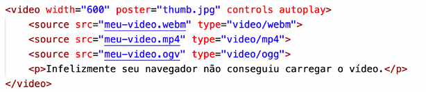

Nosso primeiro passo no caminho de adaptar nosso conteúdo ao tamanho da tela vai ser aprender a gerar imagens de tamanho diferentes e a fazer o navegador carregar a imagem certa para cada situação. Para isso, devemos conhecer as tags <picture> e <source>.
Note que colocamos a tag <img> exatamente como aprendemos no capítulo 06 do nosso material. A novidade aqui é que inserimos essa imagem dentro da tag <picture>, que vai concentrar as outras fontes de imagem. Por padrão, a imagem foto-g.png (1000x1000px) será carregada. O problema vai começar a surgir quando a janela do navegador chegar perto dos 1000 pixels de largura, pois a foto não vai mais caber lá. Vamos agora adicionar uma linha para resolver esse problema:
O problema vai começar a surgir quando a janela do navegador chegar perto dos 1000 pixels de largura, pois a foto não vai mais caber lá. Vamos agora adicionar uma linha para resolver esse problema:
Note que a tag <source> possui três atributos:
ATENÇÃO! Você pode até colocar o valor exato de 1000px na
propriedade max-width, mas vai perceber que um valor ligeiramente
acima vai gerar resultados mais interessantes.
Agora, recarregue seu código e mude o tamanho da janela do navegador. Você vai perceber que a imagem muda automaticamente conforme aumentamos ou diminuímos o tamanho da tela. Vamos continuar e acrescentar mais um <source> à nossa imagem:
É importante que existe uma ordem entre os <source>, e nessa nossa configuração, os itens mais acima sejam os menores tamanhos para max-width e que os seguintes sejam maiores, de forma crescente. O último item dentro de <picture> deve ser a imagem padrão. Faça seus testes, modifique as ordens, entenda os resultados!
Com a HTML5, veio também a facilidade em compartilhar áudio nos nossos sites e sem depender necessariamente de JavaScript ou plugins extras. A partir de agora, basta uma tag <audio> e alguns <source> para fazer seu site ser capaz de tocar qualquer áudio.
Vamos analisar os principais atributos da tag
Dentro da tag <audio>, adicionamos vários <source> com formatos diferentes do mesmo áudio. Coloque na parte de cima o seu formato favorito. Os demais só serão carregados caso o de cima falhe. Caso todos falhem, criamos um parágrafo que permite o download do arquivo MP3 para ouvir no player padrão do dispositivo.
Para inserirmos um vídeo no nosso site, usamos a tag <video>, caso o vídeo estiver hospedado no nosso servidor.
Antes de mais nada, vamos criar a tag <video> e configurar alguns atributos importantes: